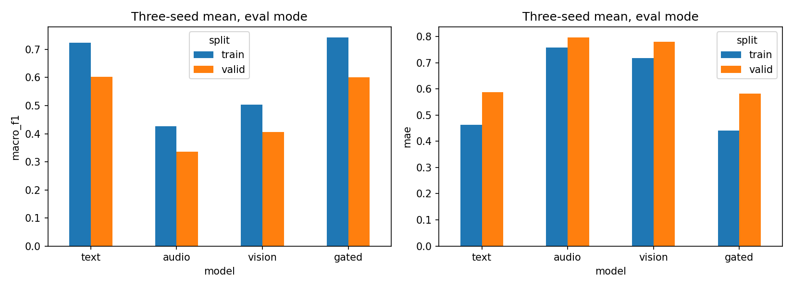
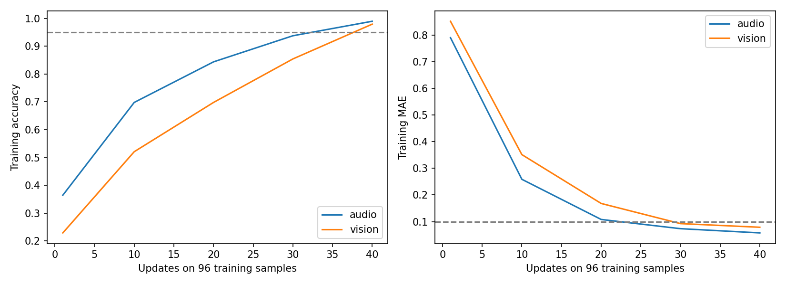
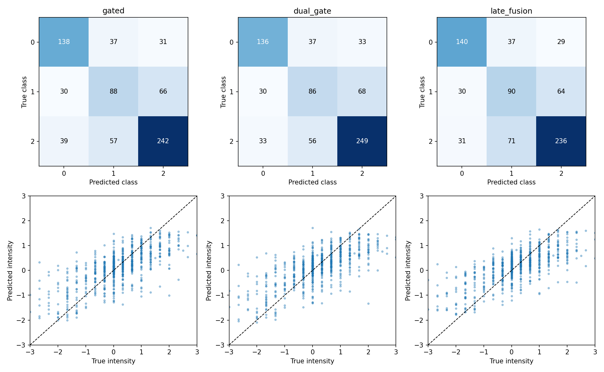
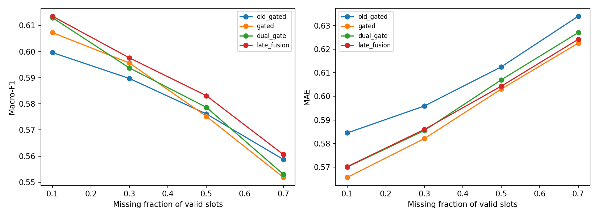

问题二：诊断与任务独立融合
两种候选均未通过全部原验收条件，保留旧版 old_gated；本轮不追加模型或调参。
6次正式训练；每候选217个验证输入；诊断和真值oracle不作为部署性能。测试及附件3仅在候选通过后运行。
集成比较
| model |
J |
parameters |
clean_f1 |
clean_mae |
neutral_recall |
strong_negative_mae |
strong_positive_mae |
robust_f1 |
robust_mae |
eligible |
pass_clean_f1 |
pass_clean_mae |
pass_robust_f1 |
pass_robust_mae |
pass_neutral |
pass_strong_negative |
pass_strong_positive |
| old_gated |
0.9926 |
163816 |
0.6055 |
0.5784 |
0.4076 |
1.0426 |
1.0198 |
0.5811 |
0.6067 |
False |
True |
True |
False |
True |
True |
True |
True |
| text |
0.9796 |
89638 |
0.6215 |
0.5702 |
0.5000 |
0.9667 |
1.0619 |
0.5871 |
0.6032 |
False |
True |
True |
False |
True |
True |
True |
False |
| gated |
0.9697 |
163816 |
0.6214 |
0.5579 |
0.4783 |
0.9945 |
1.0699 |
0.5825 |
0.5934 |
False |
True |
True |
False |
True |
True |
True |
False |
| dual_gate |
0.9702 |
166025 |
0.6231 |
0.5603 |
0.4674 |
1.0264 |
1.1075 |
0.5846 |
0.5974 |
False |
True |
True |
False |
True |
True |
True |
False |
| late_fusion |
0.9712 |
178008 |
0.6223 |
0.5633 |
0.4891 |
1.0952 |
1.1504 |
0.5887 |
0.5962 |
False |
True |
True |
False |
True |
True |
False |
False |
训练／验证诊断
| model |
split |
accuracy |
macro_f1 |
mae |
neutral_recall |
| audio |
train |
0.5368 |
0.4262 |
0.7590 |
0.1148 |
| audio |
valid |
0.4386 |
0.3367 |
0.7971 |
0.0670 |
| gated |
train |
0.7703 |
0.7431 |
0.4411 |
0.5893 |
| gated |
valid |
0.6223 |
0.6008 |
0.5829 |
0.4583 |
| text |
train |
0.7461 |
0.7245 |
0.4622 |
0.6139 |
| text |
valid |
0.6181 |
0.6024 |
0.5874 |
0.4946 |
| vision |
train |
0.5794 |
0.5040 |
0.7180 |
0.2155 |
| vision |
valid |
0.4684 |
0.4054 |
0.7806 |
0.1721 |
96条记忆检查
| model |
steps |
passed |
accuracy |
macro_f1 |
weighted_f1 |
mae |
pearson |
neutral_recall |
f1_negative |
f1_neutral |
f1_positive |
strong_negative_mae |
strong_positive_mae |
| audio |
40 |
True |
0.9896 |
0.9896 |
0.9896 |
0.0577 |
0.9978 |
1.0000 |
0.9846 |
1.0000 |
0.9841 |
0.0781 |
0.0509 |
| vision |
40 |
True |
0.9792 |
0.9792 |
0.9792 |
0.0789 |
0.9955 |
0.9688 |
0.9846 |
0.9688 |
0.9841 |
0.1069 |
0.1252 |
梯度诊断
| condition |
block |
batches |
mean_cosine |
negative_fraction |
zero_gradient_batches |
mean_norm_ratio |
| clean |
branches |
24 |
0.4980 |
0.0000 |
0 |
0.8827 |
| clean |
gate |
24 |
0.5330 |
0.0833 |
0 |
0.8934 |
| dynamic |
branches |
24 |
0.5477 |
0.0000 |
0 |
0.8644 |
| dynamic |
gate |
24 |
0.5793 |
0.0000 |
0 |
0.9229 |
完整输入互补性（oracle不可部署）
| group |
n |
text_wrong |
text_wrong_rescued |
rescue_fraction |
text_correct |
text_correct_harmed |
harm_fraction |
text_mae |
oracle_available_mae |
| all |
728 |
264 |
138 |
0.5227 |
464 |
49 |
0.1056 |
0.5702 |
0.3942 |
| neutral |
184 |
92 |
13 |
0.1413 |
92 |
21 |
0.2283 |
0.3676 |
0.1253 |
| strong_negative |
58 |
6 |
5 |
0.8333 |
52 |
1 |
0.0192 |
0.9667 |
0.9446 |
| strong_positive |
73 |
7 |
7 |
1.0000 |
66 |
0 |
0.0000 |
1.0619 |
0.9832 |
任务门控均值
| model |
classification_T |
classification_A |
classification_V |
regression_T |
regression_A |
regression_V |
| dual_gate |
0.6632 |
0.1523 |
0.1846 |
0.4299 |
0.2890 |
0.2811 |
| late_fusion |
0.9143 |
0.0385 |
0.0472 |
0.8373 |
0.0499 |
0.1128 |
相对同条件基线的区间
| reference |
model |
condition |
metric |
delta |
lower |
upper |
| gated |
dual_gate |
clean |
macro_f1 |
0.0017 |
-0.0262 |
0.0289 |
| gated |
dual_gate |
clean |
mae |
0.0024 |
-0.0098 |
0.0153 |
| gated |
dual_gate |
continuous_average |
macro_f1 |
0.0021 |
-0.0134 |
0.0165 |
| gated |
dual_gate |
continuous_average |
mae |
0.0041 |
-0.0051 |
0.0142 |
| gated |
late_fusion |
clean |
macro_f1 |
0.0009 |
-0.0254 |
0.0264 |
| gated |
late_fusion |
clean |
mae |
0.0054 |
-0.0098 |
0.0217 |
| gated |
late_fusion |
continuous_average |
macro_f1 |
0.0062 |
-0.0121 |
0.0239 |
| gated |
late_fusion |
continuous_average |
mae |
0.0028 |
-0.0100 |
0.0167 |
图表




材料